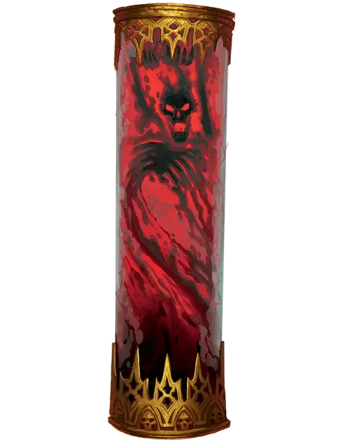

Некрихор
Necrichor
Средняя Нежить

Класс Доспеха 12
Хиты 67 (9к8 + 27)
Скорость 20 футов, лазая 20 футов
| мод | спас | ||
|---|---|---|---|
| СИЛ | 8 | −1 | −1 |
| ЛОВ | 15 | +2 | +2 |
| ТЕЛ | 17 | +3 | +6 |
| мод | спас | ||
|---|---|---|---|
| ИНТ | 17 | +3 | +6 |
| МДР | 13 | +1 | +4 |
| ХАР | 10 | +0 | +0 |
Навыки Магия +9
Сопротивление урону кислота, некротическая энергия
Иммунитет к состояниям глухота, захват, испуг, истощение, опутанность, ослепление, отравление, очарование, паралич, сбивание с ног
Чувства слепое зрение 120 футов (слеп за его пределами), пассивное Восприятие 11
Языки любые три языка, Телепатия 120 фт.
Опасность 7 (2900 опыта)
Бонус мастерства +3
Особенности
Легендарное сопротивление (2/день). Если некрихор проваливает спасбросок, он может вместо этого сделать спасбросок успешным.
Восстановление. Если его безжизненные останки не окроплены святой водой или не помещены в сосуд под действием заклинания святилище [hallow], уничтоженный некрихор восстаёт через 1к10 дней, восстанавливая все хиты, появляясь в месте, где он умер, или в ближайшем незанятом пространстве.
Паучье лазанье. Некрихор может лазать по труднопроходимым поверхностям, включая потолки, без необходимости совершения проверок характеристик.
Необычная природа. Некрихор не нуждается в воздухе, еде, питье или сне.
Действия
Мультиатака. Некрихор совершает две атаки.
Ложноножка. . Рукопашная атака оружием: +5 к попаданию, досягаемость 10 фт., одна цель. Попадание: 5 (1к6 + 2) урона некротической энергией, и цель должна преуспеть в спасброске Телосложения Сл 14, иначе станет парализованной до начала следующего хода некрихора.
Некротический снаряд. . Дальнобойная атака заклинанием: +6 к попаданию, дистанция 120 фт., одно существо. Попадание: 12 (2к8 + 3) урона некротической энергией и цель не может восстанавливать хиты до начала следующего хода некрихора.
Кровавый кукловод (перезарядка 6). Некрихор выбирает существо, которое он может видеть в пределах 5 футов и у которого отсутствует часть хитов. Если цель не является Конструктом или Нежитью, она должна преуспеть в спасброске Телосложения Сл 14, иначе некрихор входит в пространство цели и прикрепляется к ней на 1 минуту. Будучи прикрепленным, некрихор получает только половину нанесенного ему урона (с округлением в меньшую сторону), а вторую половину урона получает цель. Некрихор может прикрепиться только к одному существу одновременно. Прикрепленный некрихор может телепатически контролировать движение цели, её действие или и то, и другое. При таком управлении цель может совершить только действие Атака (цель выбирает некрихор) или действие Рывок. Существо, к которому прикреплён некрихор может повторять спасбросок в конце каждого своего хода, при успехе сбрасывая с себя некрихора и заставляя его переместиться в ближайшее незанятое пространство.
Описание
Некрихор - это существо живой крови, сформированное из ихора злых богов или слизи в склепах несостоявшихся личей. Несмотря на потерю плотности физической формы, эти мерзкие существа сохраняют свой ужасный интеллект и стремятся к маниакальным целям — первая из которых включает в себя возвращение тела. Для этого они ищут слуг, которые будут исполнять их волю, принуждая даже самых упрямых потенциальных приспешников, обращая против них их собственную кровь.
Некрихоров исключительно трудно уничтожить, поскольку они оставляют след своей сущности в венах каждого существа, которым они управляли, и могут регенерировать себя из крови этих существ. Неспособные погасить их ужасающую нежизнь, добродетельные религии и бдительные организации (вроде Ордена Стражей, подробно описанной в Путеводителе Ван Рихтена по Равенлофту) заключают эти кровяные ужасы в магически защищенные тюрьмы. Однако по прошествии веков знания о том, что содержится в этих тюрьмах и где находятся некоторые из них, были утрачены. И каждый заключенный некрихор понимает, что его пленение может быть длительным, но время не имеет большого значения для нестареющих. Здесь представлен статблок некрихоров, которым удалось избежать тюремного заключения.